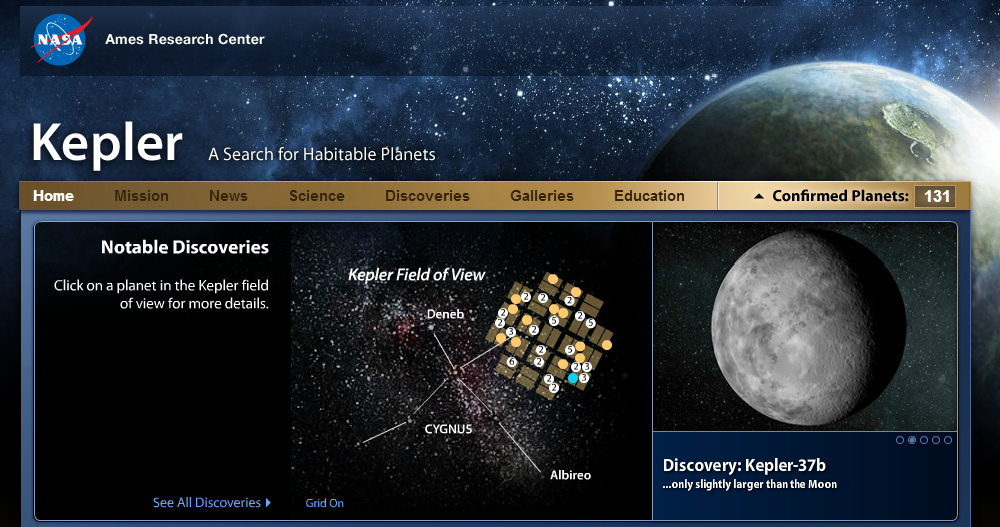
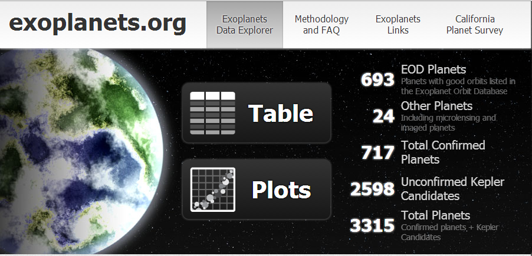
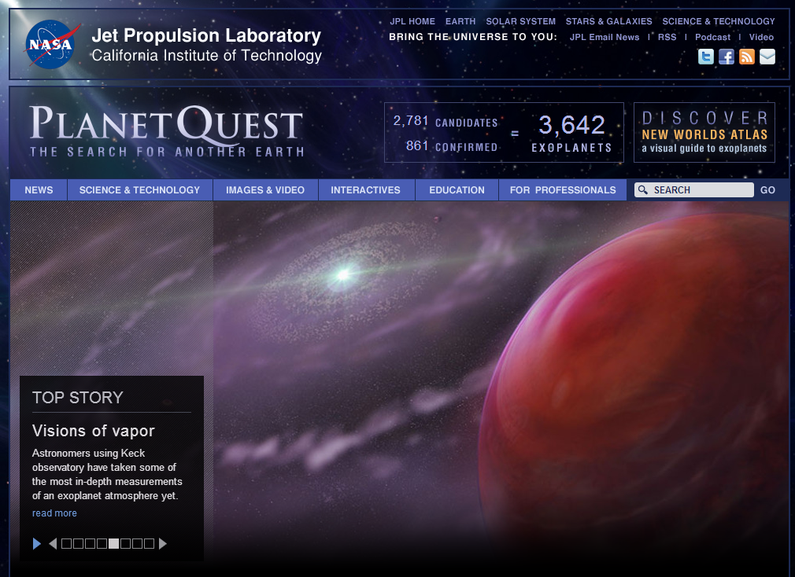
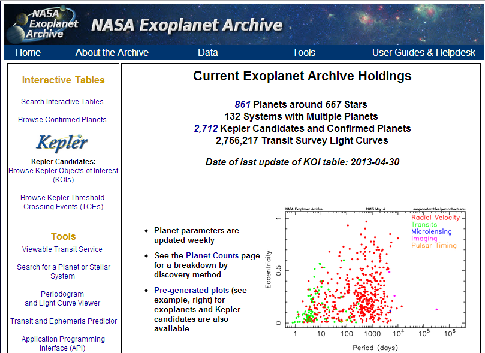
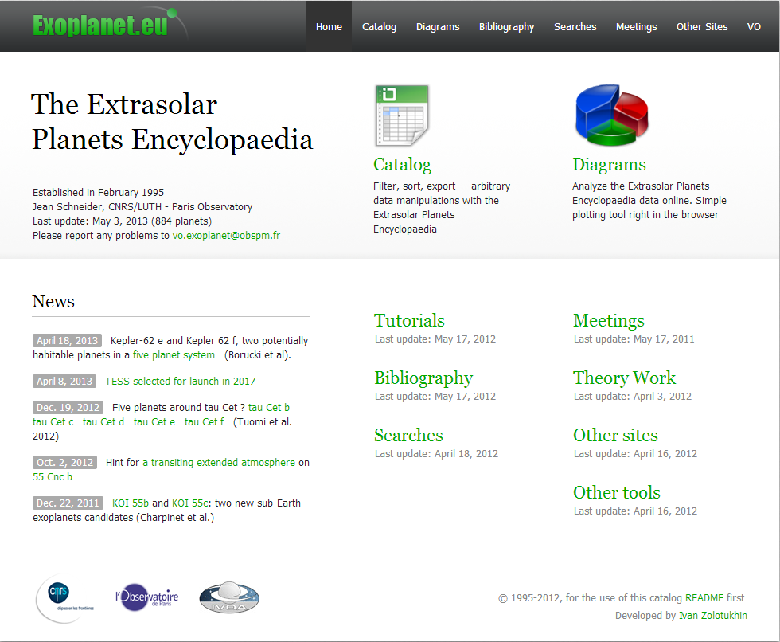
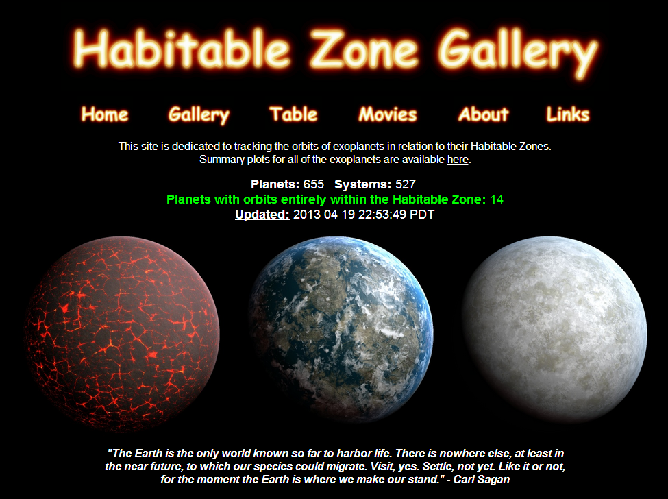
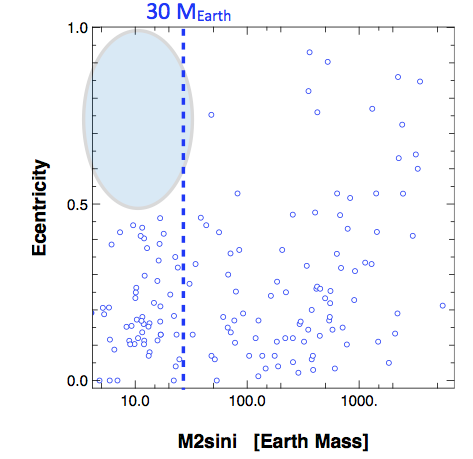

系外行星¶
.jpg)
来源：Wikipedia File:Planets everywhere (artist’s impression).jpg
本文档由 星际移民中心 维护。

文档内容若无特殊说明使用 CC BY-SA 协议。

本文档将会覆盖的内容为：
- 系外行星的数据及处理
- 系外行星与系外生命
- 系外行星形成理论
目录¶
我们的征途——系外行星¶
在我们人类几千年的文明史中，我们一直试图解释自己：
我们是谁？我们从哪里来？我们向何处去？
我们是宇宙间孤独的存在么？生命火种真的来自地球么？茫茫星空中还有没有我们可以居住的家园？
所有这些问题，都或多或少的这样的问题有关联：
宇宙中有没有系外行星？有多少系外行星？系外行星可以承载生命么？
几千年以来，我们对行星的了解，一直被限制在太阳系内，我们可以计算精确的行星轨道，可以用铅笔发现海王星。但是我们对太阳系内行星了解的越多，就越想知道：行星，真的只在我们的太阳系中么？
1988 年，Campbell, B., Walker, G. A. H., & Yang, S. 在 Astrophysical Journal 上面发表了一篇题为 A search for substellar companions to solar-type stars [0] 的文章，文章使用 radial velocity 的方法发现恒星异常，只是文章说的很保守，”these low-mass objects could represent the tip of the planetary mass spectrum”. 直到 2003 年，Artie P. 等人才使用 4 组不相关的数据来验证了这颗行星的发现（论文）。这样我们可以说，第一颗系外行星，其实是在 1988 年就看到了。
1995 年，人们确认了第一颗围绕主序星运动的系外行星，名为 51 Pegasi 。

间隔十多年，可谓是好事多磨难。现在，随着各类技术的出现，和人们对系外行星的关注度越来越高，系外行星已经不在稀有，被确认的系外行星现在达到了 1713 颗（此为 NASA Exoplanet Archive 的数据，截止到 2014-05-14； 在 The Extrasolar Planets Encyclopaedia 上截止到 2014-05-28 有 1792 颗），而被列入 Kepler Object of Interest 的候选达到了 3845 颗（NASA Exoplanet Archive，截止到 2013-02-13），并且有 443 个多行星系统（NASA Exoplanet Archive，截止到 2013-05-14）。
越来越多的系外行星的发现，使得有些原来看起来很遥远的科幻，也突然变得亲切起来。似乎我们的世界有了一个很重要的目标，那就是“飞出太阳系，飞向系外行星”。
系外行星：历史，方法，恒星属性，距离。来自 http://www.wired.co.uk/magazine/archive/2011/02/start/infoporn
什么是系外行星¶
什么是系外行星？自然不在太阳系内的行星就是系外行星。那么什么是行星呢？这是很难定义的，不过 WGESP (Working Group on Extrasolar Planets) 给了一个“可行的定义” [4]。
我想严格定义在这里并不重要，其实这类定义是要随着我们的发现更改的。思考定义很枯燥，不过多少有点值得思考的是 [1] ：
- 进行核聚变天体可以是行星么？
- 四处自由流浪的天体可以可以是行星么？
- 曾经发生过核聚变但是后来熄灭的天体可以是行星么？
结论可以看尾注。[1]
系外行星观测手段¶
系外行星的观测手段在近几年来有了很多进展，而且新的方法还在被提出。[2]
径向速度（Radial Velocity，简称 RV）¶
径向速度是一种很重要的方法，因为径向速度变化可以引起恒星光谱的多普勒偏移，即这种方法是可以跟光谱联系起来的，而光谱的测量，很久以来一直是我们最精密的测量手段之一。目前大多数被确认的系外行星，都是用径向速度的方法首先观测到的。
径向速度（Radial Velocity）变化，引起光谱的多普勒偏移。
这张图片直观的说明了为什么我们可以通过测量恒星的径向速度的变化来得知该恒星是否有行星：围绕恒星转的天体会引起恒星在径向速度上的周期性变化。我们可以根据这个周期性变化来获得另外一个天体的相关数据，例如质量，公转周期等。
但是这种方法对于那些过于小的行星就不起作用了，因为行星太小的话，恒星的径向速度变化太小，我们很难精确的确认。
凌日（Transit Light Curves）¶
当一个行星从恒星面向我们的一面经过时，会遮挡恒星的部分光芒，从而导致我们观测到的恒星的亮度减小。
凌日方法寻找行星的原理。
Kepler 卫星的工作原理主要就是凌日法。这种方法的特点是速度快，而且可以用来寻找直径小得多的行星。但是导致恒星亮度变化的原因很多，行星可能只是其中一种，所以 Kepler 卫星目前找到的是大量的地外行星候选名单，真正的确认一般需要其他方法辅助。[3]
我们也可以通过仔细的研究凌日的时刻和持续时间来获得更多的信息。例如对于一个有多个行星的系统，凌日时间可能会有些变化。这样甚至可以发现那些不会发生凌日的行星，因为这些天体之间通过引力相互左右的。这种方法是凌日时间变分法(Transit Timing Variation，TTV)。
微引力透镜（Gravitational Micro-lensing）¶
微引力透镜的方法寻找系外行星。点击图片看大图。
引力透镜效应是一种广义相对论效应：天体的引力场可以使得光线弯曲，从而使得光线不经过次天体时的引力场和经过此天体时的引力场不同。
配图是一个很好的说明（点击图片看大图）。当引力透镜现象发生时，如果作为透镜的天体是一个带有行星的恒星，那么行星的运动会导致引力透镜效应产生的图像不同，行星也有引力场。
系外行星数据¶
系外行星的研究对于普通人来说，似乎只是听听看看就完了的事情。但是并非如此。在天文领域，按照国际惯例，大型天文项目的数据是会变成公共数据的。 Kepler 卫星和大型的系外行星的数据也是开放的，所以每个人都可以拿到数据。 当然，数据不是力量，我们拿到数据只是第一步，更加关键的是，我们能够从数据中获得什么。很多的网站提供了数据和用来分析数据的工具，我们甚至不需要自己写程序，只需要点点画画，就可以得到一些漂亮的结果。所以，我们每个人都可以参与到地外行星的寻找（看下面开放数据和工具的 Planet Hunters 一条）和分析中来。
开放数据和分析工具¶
列举一下我这段时间遇到的一些提供数据和工具的网站：
Planet Hunters ，一个可以帮助 Kepler 寻找行星的网站，只需要点几下，就可以学会如何寻找行星，可以帮助 Kepler 找到行星。
http://kepler.nasa.gov/，NASA 的 Kepler 项目官网。有些科普性的内容不错。
http://exoplanets.org/，包括所有的数据和一套用来作图的完整的工具，所有的工作都可以在线完成，包括作图和分析。
http://planetquest.jpl.nasa.gov/ ，NASA 的 JPL 的网站，除了数据，还有一些科普性的内容，甚至游戏和漫画，也有分析工具。内容很多。
Exoplanet Archive CalTech， 提供数据和全面的分析工作。
http://exoplanet.eu/，除了很方便的获取数据，还可以在线绘制散点图和 Histogram 图。
http://www.openexoplanetcatalogue.com/index.php， 这个网站提供了很棒的可视化工具，包括BubbleChart，Histogram，当然也数据，而且是可以筛选的数据。更可贵的是，他们是开源的。他们有个数据可视化竞赛。[5]

http://www.stefanom.org/SystemicConsole/new/index.html， 一个程序，用来分析系外行星的数据的。从起的名字来看，似乎是在下一盘很大的棋。

http://www.hzgallery.org/ ，关于宜居带，Habitable Zone. [6]

系外行星数据可视化¶
一张合理的图像会给我们比数字更加直观的感受，可以说通过合理的设计图像，可以获得一些看数据得不到的灵感，insight.
当然可视化是一个很庞大很复杂的话题，我对这个方向了解不多，所以保持对他们的敬畏，这一部分就仅仅列举几个有趣的可视化吧。
这篇文章的第二张图，是一张非常棒的图，信息量很大，而且很容易看懂。我再重新贴过来。
系外行星：历史，方法，恒星属性，距离。来自 http://www.wired.co.uk/magazine/archive/2011/02/start/infoporn 图的制作过程见此链接：http://www.informationisbeautiful.net/book/process/executing-the-exos/
”XKCD 的 1071 号作品“是一个很有趣的可视化，使用了 bubble chart 的手段：

这个图没有交互，交互版本有两个：http://codementum.org/exoplanets/ 或者 http://openexoplanetcatalogue.com/bubblechart.html .
Kepler-Visualization 是一个用 Processing 写的可视化程序，把所有的行星都放在一个恒星周围，可以看出恒星距离的分布等等。
Space-Bangalore / Exoplanet-Arudino 似乎是一个很有趣的 repo，利用 Arduino 来做好玩的玩具。
未完¶
系外行星是一个正在热门研究中的话题，这个文档会不断总结一些相关的内容。
或许我们可以想象一下，在不久的将来，我们定位了很多适合生命生存的星球，然后我们进行大规模的星际移民，终于像海因莱茵在《时间足够你爱》里面描述的一样，人类会进入大散居时代，于是人类的未来变得更加广阔，星际成为海洋，我们在这里骄傲的航行。
再久远一些，或许我们会问，我们的宇宙是独一无二的么？
| [0] | Astrophysical Journal, Part 1 (ISSN 0004-637X), vol. 331, Aug. 15, 1988, p. 902-921. |
| [1] | (1, 2) 按照定义，上面的三个问题的答案是这样的： * 不能是一个进行核聚变的天体，因为这样就像恒星了。 * 要围绕着一个恒星（或恒星遗迹）转的，要不然就会放任漂泊了，这类也不叫行星，很多可以被归类到次棕矮星（sbu-brown dwarf）。（不过在 Exoplanets 的数据库中有一颗 CFBDSIR2149，是无寄主的行星。） * 即使是现在没有核聚变，那么质量太大了，以至于在 H 的热核聚变的极限质量至上了，甚至可能曾经进行过核聚变，只是不能维持下去罢了，那也不能叫做行星，因为有一类棕矮星（brown dwarf）已经把这类包括进来了。 |
| [2] | (1, 2) 维基百科有关于观测方法的很好的解释：系外行星侦测法 .不过，英文的 Wikipedia 的解释更加全面：Methods of detecting extrasolar planets . |
| [3] | 当然 Kepler 的任务可不仅仅是找候选者。更详细的了解 Kepler 卫星可以阅读维基百科的“开普勒太空望远镜词条” 。 |
| [4] | http://www.dtm.ciw.edu/boss/definition.html |
| [5] | http://openexoplanetcatalogue.com/contest/ |
| [6] | 维基百科的“行星适居性” 和 ASTR 202 。这个话题也将会在本文档中记录。 |
天体轨道理论¶
这部分中，我们先讨论天体轨道的一些理论，主要是开普勒定律以及修正。
开普勒定律¶
开普勒三定律是描述天体运动的定律，他们描述了天体轨道形状和运动状态。通过牛顿引力定律，我们可以知道开普勒第三定律不仅仅适用于我们的太阳系，同时适用于其他的星系。
开普勒第二定律¶

开普勒第二定律：在相等时间内，太阳和运动着的行星的连线所扫过的面积都是相等的。这其实是角动量守恒。
开普勒三定律与系外行星探测¶
想要讲开普勒定律应用到行星探测中，我们有几个问题需要解决：
- 对于开普勒定律更加严格的描述，应该是讲“太阳”改为“质心”，同时太阳变得不那么特殊，也服从开普勒定律。因为显然我们可以取两颗质量相等的天体让他们相互围绕，这时候两颗天体没有任何一颗相对于另一颗，当我们增加其中一颗的质量然后重新让他们相互围绕的时候，在质心系看来，重的一颗的半轴会越来越小，如果我们将这颗星变成无穷大质量，那么显然质心跟这颗天体重合，所有的定律都回到了原始的开普勒定律。**对于两颗任意质量的天体的相对运动，开普勒三定律该如何修改呢？**对于第一和第二定律，只需要将太阳改为质心即可。对于第三定律，我们需要重新推导。
- 对于多星行系统，多个行星对恒星带来的影响是什么呢？
- 在探测一个星系的时候，星系轨道平面并不是总是垂直于我们的视线方向的，那么我们如何处理这种倾斜呢？
修正开普勒三定律¶
通过简单的牛顿引力定律，我们可以推导出所谓的 barycentric oribit 的相关的定律，这里面行星和恒星相互围绕他们的质心运动。

Barycentric Orbit
此时，我们可以直观的想象到，在质心系中，两个天体有相同的周期 \(P\)。两个天体的半长轴之比只与他们的质量有关，
这正是质心系的定义而已。
Advanced
如果使用合适的单位（长度：AU即天文单位；质量：太阳质量；周期：年），我们可以将相关公式非常优雅的写出来，
如果我们切换参考系，然其中一个天体静止，我们会得到这样一个结果，
其中 \(a_r=a_1+a_2\)。
在系外行星的探测中，半长轴和质量之间的反比关系，
可以给我们一个非常重要的提示，行星的质量越大，恒星的半长轴也越大，因为大多数情况下我们看不到行星只能看到恒星，所以这也就意味着我们越容易探测到这颗行星。
作为一些例子，我们可以看看太阳系的情况。[2]
| 系统 | 已知的行星质量（单位太阳质量） | 已知的行星轨道半长轴（AU） | 求得的太阳的半长轴（千米） |
|---|---|---|---|
| 地球和太阳 | 3×10^{−6} | 1 | 448 |
| 火星和太阳 | 3.21×10^{−7} | 1.52 | 73 |
| 木星和太阳 | 0.96×10^{-3} | 5.20 | 7.44×10^5 |
而太阳的半径为 \(1.39\times 10^{6}\) 千米，所以相比于太阳的半径，地球和火星能带来的太阳的移动太小，这也从一个侧面说明了系外行星的探测的困难。
然而实际上对于多行星的系统，行星之间的共同作用可以产生一些显著的效果。例如对于太阳系来说，土星和木星的联合作用比较显著，可以产生比较大的太阳的移动。

图片来自 Wikipedia File:Solar system barycenter pl.svg

图片来自 Wikipedia File:Solar System Barycenter 2000-2050.png
多星行¶

多星行星系中，恒星的运动变得更加多样——各个行星对恒星的影响的叠加，即横多椭圆的叠加。
系外行星的探测¶
系外行星的探测方法有两大类，直接探测和间接探测。
径向速度法¶
在之前的理论的讨论中，我们提到了轨道平面不一定平行于我们的视线。

轨道平面有个倾角 \(i\)。
原则上说只要轨道平面不是垂直于我们的视线，我们就可以观测到恒星在行星的作用下的前后摆动，即恒星有径向的速度变化。
恒星在我们的视线方向的运动速度是
其中的 \(k\) 是径向运动的幅值，也是我们最关心的部分。而从上图可以看出 \(i\) 是轨道的倾角，当然倾角越大，径向运动越明显。
在实际的观测中，周期是容易获得的量，而半长轴并不是。不过我们可以通过开普勒丁三定律把径向运动的幅值跟天体的质量联系起来，
这样我们可以看出，行星的质量越大，恒星质量越小，周期越短，轨道的偏心率越大，能够观测的径向速度幅值越大。不过值得注意的是，只要我们能够看到恒星，这种方法跟我们和恒星的距离无关，是一种普适性比较好的方法。
对于太阳来说，我们可以看几个例子 [1] ，
这张图表给出了以太阳为例，不同质量的天体在不同的轨道半径的地方所引起的太阳的径向运动的数值。可见这都是些很小的数值。
下面的问题是，这些径向运动都这么小，我们如何探测恒星的这种径向运动呢？

恒星的运动带来的光谱变化。视频：raidalSpectrumESO1035g.m4v 。来源：The radial velocity method for finding exoplanets | ESO
HARPS 的光谱测量可以达到 1 m/s 的径向速度测量精度。而这要求仪器能够测量 15 纳米的波长变化，或者说要去能够测量 1/1000 的 CCD 上的单像素上的变化。这样也就需要我们把仪器的温度降低到足够低，使得热涨落降低到不影响我们测量的程度。
然而，径向速度法所遇到的困难是，因为恒星在长时间上会有一些活动，从而导致光谱的变化，所以这种方法在测量长周期的天体的时候，需要考虑到恒星本身的变化。
天体测量学¶
天体测量学（Astrometry）是测量天体位置的一个天文学分支。我们之前看到过我们的太阳其实一直在变动位置。
那么，如果我们能够时刻监测恒星的位置，我们就可以推导出行星的状况。
理论上来说，我们的测量需要能够精确的分辨出的一个很大的距离上的变化。一颗距离我们 \(d\) （单位：秒差距）的恒星，距离的变化最大为长轴的长度 \(2a_1\)。也就是说，量化之后，需要能够分辨如下一个份数（乘坐 astrometric signature）。
实际的测量中，我们可以获得周期 \(P\)，恒星距离我们的距离 \(d\) 也可以测得，如果我们知道这个 astrometric signature，那么我们就可以获得两个质量的关系。实际上恒星的质量可以推算出来，所以我们就可以得知行星的质量。
因为行星的质量常常远远小于恒星的质量，\(m_2\ll m_1\)，
可以看到对于长周期的情况，astrometric signature 更大，也就更容易测量。
证明
这里我们可以使用泰勒展开来获得 \(m_2\ll m_1\) 的情况下的公式。
我们知道 \(1/(1+m_2/m_1)\approx 1\)，所以 astrometric signature 的式子可以简化成，
为了有些数值上的经验，下图是几个例子。[1]

天体测量学方法的问题是，我们需要测量非常非常小的角度。而且，越远的恒星，astrometric signature 就越小，越难测量，所以这是一种跟恒星距离有关的测量方法。但是这种方法的特点是，对于长周期的情况，这种方法会越准确，越容易测量。恰好跟径向速度方法构成互补。
来源：Wikipedia File:Gaia spacecraft.jpg
直接影像¶

直接影像法。来源：Wikipedia File:444226main exoplanet20100414-a-full.jpg
由于行星反射的光子太少，加上恒星的掩盖，直接拍摄行星的影像非常困难。然而通过一些技术手段，这是可以做到的，而且这种方法的优点也很显著。
相比于之前的天体测量学方法，这种方法需要测量的角度就不需要那么小了，因为我们现在是在测量行星的轨道，而不是恒星的。
然而，想要直接看到行星，我们需要一个大口径的望远镜，而大口径的望远镜受到大气扰动的影响就越大。解决这个问题的方式是使用 adaptive optics. 下面来自 ESO 的视频清楚的展示了大气扰动的问题和自适应光学方法的效果。
凌日法¶
利用行星对恒星光源的遮挡，我们可以探测行星。
一个非常好的理解凌日现象的例子是金星凌日：

为了看得更明白些，我们看看下面这张 gif 图片：

来源：Wikipedia: File:Astronomical Transit.gif
这样当恒星被行星遮挡的时候，我们就会看到恒星的亮度有个降低，因为行星的遮挡是周期性的，我们可以看到周期性的亮度曲线的降低。

来源：Wikipedia: File:Planetary transit.svg
一个需要考虑的问题是，系外行星中，我们能够观测到的这种现象需要什么条件呢？
倘若轨道平面的法向正对我们，那么我们是没法在地球这边观测到的。
来源：LCOGT
假设所有行星的轨道平面是随机分布的，那么我们观测能够观测到一个行星凌日的概率是跟以下几个因素相关的：
- 行星的大小。行星越大，对恒星的遮挡越大。
- 恒星的大小。恒星越大，同样大小的行星对它的遮挡越小。
- 行星距离恒星的距离。行星距离恒星越近，对于一定距离外的观测者，观测到的可能性越大。
- 行星的周期。行星的周期太长，我们可能不能等到完成一个周期的观测。
来源：Winn et al. 2010. 如果我们正好在行星形成的阴影区中，我们就能看到。否则我们没法看到。
这样我们实际上可以计算我们看到凌日的概率，
这里面 \(a\) 是半长轴，\(R_{S}\) 和 \(R_p\) 分别是恒星和行星的半径，\(e\) 是轨道偏心率。
一个值得注意的是，即便第一项很小，轨道的偏心率足够大的话，我们可以将概率提高很多倍。因此实际上这种方法要比一开始想象的要实用的多。只需要一台小望远镜，我们也能够发现这种现象。
设想如果行星的大小跟恒星的大小差不多，这样我们可以几乎观测到一个完成想“日食”。而且如果轨道半径足够短，这种日蚀的的周期也会足够短，更容易被观测到。因此，凌日法对于 hot jupters 的观测来说，是一种非常强大的方法。
一般讨论¶
我们可以通过观察凌日光变曲线来精确的计算很多系统的属性。

行星进入完全凌日状态的时间和退出时间可以从光变曲线读取出来，然后我们可以计算出真正的凌日时间。
在观测中，一个非常重要的量是光通量比，
也就是我们计算光通量的相对变化。
影响光变曲线的的因素很多，比较重要的几个有：
行星的反射光
考虑到行星也会反射光，所以不同相位的行星会对总的通量有个影响，会形成一个类似正弦曲线的曲线。
观测的波长
恒星并不是一个圆盘，而是一个流动的圆球。[3]

计算行星系统参数¶
我们想要获得的信息包括：
- 行星的密度
- 行星的轨道的参数，包括半长轴，偏心率，周期
这些都是可以计算的参数。例如轨道的偏心率，因为我们有关于凌日的公式：
除去行星的凌日过程和隐藏（occultation）时间
\[\Delta t_c \approx \frac{P}{2}\left( 1+\frac{4}{\pi}e\cos\omega \right)\]行星的凌日时间和隐藏时间的比值
\[\frac{T_{occ}}{T_{tra}}\approx \frac{1+e\sin\omega}{1-e\sin\omega}\]
这样我们就可以计算偏心率了。
如何确认一颗行星¶
凌日现象可能有其他因素造成的，例如
- 双星系统，transiting stellar object
- 背景中可能的星蚀
- 跟一颗恒星在光学上相隔很近的一个行星系统发生凌日
所以需要通过对光变曲线和它的噪音的研究，排除这些可能性，才能进一步提高置信度。

微引力透镜¶
前面这两种方法有个很大的缺陷，就是对于长周期的行星的观测几乎无能无力，除非我们能够做几个世纪的观测，显然对现在而言，这是不现实的。另外，对于距离恒星太远的行星，对于恒星的光谱扰动太小，极不容易观测。所以我们需要另外的完全不同的方法。
引力的时空几何，所以跟所有的运动耦合，因此可以影响物质的运动，包括光。

光线在引力的作用下弯曲。来源：Wiki Commons
无限远来的光线在引力的作用下弯曲之后，到达无限远处时，与原来入射光线的偏角是可以由下式计算的（一阶近似），
这里的 \(M\) 是引力源天体的质量，\(r\) 是散射参数，即引力源天体中心距离入射光线的距离。
一个实际的例子是这样的：

那么微引力透镜是什么思路呢？我们可以观测夜空，如果一个行星在某个光源和我们之间，这颗行星就可以对光源传来的光线造成微引力透镜效应。就我们银河系而言，我们可以朝着银河系中心看，因为那里的恒星的数密度比较大，也就是在背景星空上恒星更密集，对应于有更大的几率发现一颗行星对某恒星的光线产生影响，形成微引力透镜效应。
当然，这里有个问题，我们先看一眼银河系的可见光图片，

来源：Wikipedia
可以看到银河系平面上因为被尘埃遮挡从而变得比较暗。因此一个比较好的策略是，朝向银河系平面稍稍上方的地方观测。
稍作估算，天文学家发现，如果要发现一个行星，大致需要望远镜的叫分辨率达到 \(3.1\times 10^{-5}\) arsec 才可以分辨这种引力透镜图像，这要比哈勃望远镜的叫分辨率还要高的多。所以直接看到图像太困难了。所以大家想到了另外一种非常巧妙的方法。
假设我们的背景恒星和地球之间有一颗行星，那么恒星的光线经过行星的时候会发生偏折。这样造成我们在地球轨道的不同位置，接收到的光子数不同，也就是说背景恒星的亮度在不同的季节是不同的。通过观察这种变化，我们就可以找到行星的候选。实际操作中，我们可以看到甚至几天之内的变化，即便我们会受到太阳光线变化的影响。
另外，由于行星绕着主恒星运动，背景恒星的运动，也会造成的微引力透镜随着时间变化，
我们实际上看到的变化是之前提到的地球位置变化和上面这两种的结合。
参考及尾注¶
| [1] | (1, 2) 来自 Coursera 的 The Diversities of Exoplanets |
| [2] | 在 Coursera 的 The Diversities of Exoplanets 的第三周的课程中，有一个很生动的演示。 |
| [3] | Rossiter MacLaughlin effect. |
系外行星统计结果¶
通过对系外行星的探测，我们获得了大量的数据，并得出了一些统计结果。通过这些数据分析，我们能修正行星演化的模型并做出预测。
一个谜团
第一颗确认的系外行星 51 Peg b 是一颗“热木星”——质量巨大，然而这颗行星距离其恒星却非常近——甚至要比太阳系内任意一颗行星到太阳的距离。可是问题在于，距离恒星这么近的地方，并没有足够的质量来形成一颗这么巨大的行星。
谜题的答案是，这颗行星实际上是在距离恒星更远的地方形成的，但是在形成的过程中以及形成之后，这颗行星在周围物质的作用下，逐渐损失能量，轨道原来越小。
然而这给我们带来另一个问题，为什么这颗行星没有因为损失太多的动能和势能，从而掉进恒星中去呢？
另外，我们对于地外生命的好奇心，也驱使着我们去寻找宜居带中的类地行星。
行星质量-距离-半径¶
早期统计结果¶
自1995年第一颗系外行星 51 Peg b 被发现一直到2004年，天文学家一共发现了大约130颗系外行星，并根据这些数据得出了一些初步的结论：
- 1%的太阳型恒星有“热木星”。
- 至少7%的太阳型行星拥有至少一颗行星。
- 已发现的行星(大多是气态巨行星)出现在富金属恒星附近的概率更高。
- 行星轨道、行星系统多种多样。 这是最令人惊讶的一个结果：行星不但普遍，而且多种多样。
Advanced
现已发现的系外行星根据其半径、组成和轨道半径大体可以分为以下五类：[1]
- 热木星(Hot Jupiter):质量接近或超过木星,行星轨道与母恒星距离在0.5至0.015天文单位以内。
- 气态巨行星(Gas gaint):与木星、土星类似的行星。
- 冰巨星(Ice gaint):与天王星、海王星类似的行星。
- 超级地球(Super-Earth):质量约为地球的2.5到10倍的岩质行星。
- 迷你海王星(Mini-Neptune):质量低于天王星和海王星，但组成却和海王星相当类似。

早期发现的系外行星，质量分布在0.2木星质量~20木星质量之间，轨道周期大于2.5天，轨道偏心率分布在0~0.93之间。
系外行星系统的多样性¶
对于同一系外行星系统，其内部行星的轨道有可能有很大差异。根据径向速度测量法的相关知识，我们可以根据径向速度测量曲线大致判断行星轨道的偏心率。

上图所示的径向速度曲线与正弦曲线相似，因此该行星的偏心率很小，近似于圆轨道。

上图所示的阶跃型曲线表示该行星轨道的偏心率相当大。
如果行星系内的两颗行星的轨道周期相差很大，就会形成分层系统(Heirarchized System)，其径向速度曲线可以看做是两个频率相差很大的波形的叠加。 如果行星系内的两颗行星的轨道周期成整数倍，就会形成共振系统(Resonant System)，其径向速度曲线变化很快，要分辨出这是两颗行星比较困难，需要花更长的时间。

注解
分层系统（Heirarchized System）中，两颗行星的周期没有确定的关系，两颗行星的周期是任意的。而共振系统（Resonant System）的意思是说，行星的轨道周期之间有确定的关系，例如两颗行星轨道周期之比是 2 等等。
如果行星系的中心天体是两颗互相旋转的双星，那么情况又有所不同。由于双星的运动对行星轨道的影响，在双星的一定范围内无法形成稳定的行星轨道，只有在范围以外，行星轨道才可以稳定。
不同种类的系外行星系统展示在下图中：

行星的分布、质量及距离¶
在系外行星探测中，径向速度法和凌日法是最主要的两种方法，这两种方法各有局限性：
径向速度法 通过测量恒星光谱微小的变化来探测行星，这种方法能够准确测量行星的周期和质量，但却无法测量行星的半径。 凌日法 通过测量恒星亮度的微小变化来探测行星，这种方法能够准确测量行星的周期和半径，但却无法测量行星的质量。
我们可以通过比较HARPS和Kepler年具体看看两种方法各自的适用范围：
- HARPS(径向速度法)对于周期小于50天的行星，最小能测出 \(m_p \sin i \approx 3M_{\oplus}\) 的无偏分布。
- Kepler(凌日法)对于周期小于50-100天的行星，最小能测出 \(R_p \approx 1R_{\oplus}\) 的无偏分布。
由于两种方法各自的局限性，它们并不能得出完整的行星分布，因此需要对结果进行修正。


径向速度法主要分布中对质量较小、周期较长的部分进行修正。
凌日法主要对分布中半径较小，周期较长的部分进行修正。
在修正之后，得到了无偏的行星质量、半径分布，如下图所示：
另外，通过比较母恒星Fe/H的比值与行星数量的关系，我们可以得出母恒星的金属性与行星的关系：

综合分析HARPS与Kepler数据，我们可以得出以下结论：
- 1%的恒星拥有热木星，其存在于富金属恒星周围的概率更大。
- 10%的恒星拥有气态巨行星，其存在于富金属恒星周围的概率更大。
- 较小的恒星几乎没有气态巨行星。
- 50%-80%的恒星拥有至少一颗行星。
- 30%的恒星拥有一颗 \(m_p < 30M_{Earth}\) ，周期100天以内的行星。
- 大多数较小较轻的行星存在于多行星系统中。
- 存在一颗 \(m_p \sin i < 30M_{Earth}\) 行星的行星系中，超过70%还存在其他行星。
- 行星系所能允许的致密程度能使其“刚好”稳定。
行星质量与半径的关系¶
由于径向速度法、凌日法所测行星数据的重点并不相同，两者之间具有很好的互补性，如将数据结合的话，可以得到行星质量与半径的关系，这对于研究行星的内部结构十分重要。即使两个天体大小相同，如果其质量差异较大，其内部结构也将存在很大差异。例如气态巨行星(如木星)和红矮星(如OGLE-TR-122b)具有相同的半径，但由于木星质量没有OGLE-TR-122b大，其内部无法发生核反应，因此前者属于行星，后者属于恒星。

可见，了解行星质量与半径的关系对于行星分类具有重要作用，进而还可了解的行星的形成过程。 最新的系外行星质量-半径关系如下图：
观测与理论¶
通过观测，我们能够验证观测数据与理论是否符合，并能对理论进行修缮。而有了更好的理论，就能为未来的观测提供更好的方向。 下图展示了一个行星演化模型中，行星轨道半长轴、行星质量随时间变化的规律：

而对系外行星的实际观测的结果如下：

更多的观测与理论符合的情况可以见上述论文与课程视频，在此不一一赘述。 未来我们对于系外行星的观测方向主要将集中于：
获取更大量的数据。
更多探测方法的优势互补。
特定行星系统的具体分析，包括：
-行星轨道参数
-行星内部结构
-行星大气层
与理论相符
行星的轨道特征和星系的结构¶
恒星质量¶
一个直观的想法是，形成恒星系的原行星盘（Protoplanetary Disk）越大，形成的恒星的质量越大。同时因为更多的尘埃物质会使得行星的形成更快，而且最终的行星也更大。所以，按照这个想法，围绕大恒星转的行星的质量也会普遍大么？
RV 方法给出了一些数据表明[2]_ ，M Dwarfs 周围的大行星很少，相反，超级地球（Super-Earth）和迷你海王星（Mini-Neptune）出现的频率非常大。而开普勒的结果也表明[3]_ ，在 M Dwarf 周围几乎没有巨行星。
注解
我们可以把观测结果绘制成频率图，这样就可以发现不同的质量区间的行星出现的频率。
那么在质量更大的恒星周围的行星的情况呢？

从这个分布图中我们可以看到，我们确实发现了很多围绕大质量恒星转动的行星。(Exoplanet encyclopedia @ exoplanet.eu)
目前的数据来看，更大的恒星周围确实会有更大的行星。

然后，特别需要注意的是，因为探测大质量恒星周围的小质量行星很困难，所以现在的数据其实是带偏离的数据。所以我们不能直接来拿不同质量行星的出现的频率来跟之前比较。
一个比较好的方法是[4]_，统计行星总质量。例如我们可以将恒星质量分为三个区间，然后将每个区间内的所有的行星的质量求和，然后做归一化。

显然，恒星的质量越大，周围的行星的总质量也越大。
轨道偏心率¶
太阳系中的行星的轨道大多接近圆形（偏心率 \(e<0.28\)），而且想象来说，从原行星盘形成的行星，应该也大多是圆形。然而实际的数据表明，很多的系外行星的轨道并不是圆形的。
RV 方法看偏心率
牛顿力学的知识（或者开普勒定律）告诉我们，行星在近日点的时候，速率是最快的，远日点的时候，速率是最慢的。所以我们可以从径向速度曲线上面找出哪些是近日点，即速率最大的点。定性的来看，偏心率越大，在近日点附近的时间越小，近日点和远日点的速率差别也越大。
我们现在发现的行星中，有的偏心率非常大。

注解
实际上行星形成之后会有很多对轨道的扰动，所以，不是所有的行星轨道都接近圆形也并非不可理解的事情。一些可能的解释是：
- 行星和行星之间的相互作用；
- 行星和原行星盘之间的相互作用；
- 多行星迁移；
- 恒星或者行星的伴星（Kozai 效应），上图中用圆圈标注的大偏心率的行星就是在一个双星系统中；
- 其他。
另外一个很奇怪的现象是，如果我们把行星和偏心率和质量绘制出来，如下图
我们发现左上角，也就是小质量（\(<30M_{\text{Earth}}\)）大偏心率的区域，是空缺的。
一个可能的理解是，小质量的行星大多是在多行星系统中的，因此如果某颗行星的偏心率太大，整个系统就会不稳定。作为一种验证，我们看一下多行星系统中的偏心率的情况。

可以看到在多行星系统中，没有大偏心率的行星，作为对照，虚线部分，即单行星系统，却有很多大偏心率的系统。
另一个研究可以让我们看的更清楚。下 图绘制了轨道偏心率和系统中行星个数的关系，[5]

非常清楚的看到，系统中行星的个数越多，最大的偏心率就越小。换句话说，系统中的行星数量越少，偏心率的多样性就越好。
除了这种稳定性的解释，另外一种解释是，因为小质量的行星多在多行星系统中形成，而小质量行星受到原行星盘的影响（dissipation，viscosity等）更大，更加趋向于形成接近圆形的轨道。
多行星系统的动力学——牛顿模型¶
这种方法将恒星和行星都看多质点模型。
作为一阶近似，我们可以忽略行星和行星之间的相互作用。然而实际上，当出现第二颗行星的时候，除了行星和行星之间的相互作用，系统会出现一些额外的问题，例如系统的稳定性，对开普勒定律的偏离等等。
为了描述多行星系统，我们有两种方法，一种是使用数值计算，另一种是简化模型进行解析计算（远在计算机发明之前，天体力学就已经很完善了）。
Monash University 的 R. Marding 进行了一些模拟，可以发现在某些情况下，轨道的偏心率太大，会导致系统不稳定。
当然我们也可以利用这种稳定性来寻找系统中额外的行星。例如我们发现了一颗行星，但是模拟发现系统不稳定，那么我们需要另外一颗尚未发现的行星来使得系统稳定。
引潮力¶
阴影部分的行星距离恒星太近，引潮力的作用变得很重要。并且广义相对论效应也会变得显著。
HD10180 系统中发现了 7 颗行星。使用牛顿模型，这个系统是不稳定的。但是如果考虑到引潮力和相对论效应，这就是个稳定的系统了。
假定一个系统开始时具有偏心率很大的行星，但是由于引潮力，行星的能量会被潮汐消耗掉，从而轨道会变得更加接近圆形（圆轨道能量更低）。详细的说，因为行星的近日点会受到更大的引潮力，能量耗散也更多，所以这类似于在近日点的与动量相反的冲量，从而将行星从椭圆轨道带到更接近圆形的轨道。另外，岩石行星要比气体行星对能量的耗散要快，因为岩石的恢复力（张力）更大，引潮力使得行星变形，但是岩石行星可以更快的恢复到原来的形状（将能量好散掉）。
引潮力还有另外一个效应，就是会导致行星公转周期和自转周期的锁定。通常行星的公转周期要比自转周期要大，行星公转过程中，引潮力会消耗自转的能量，从而是的自转速度变慢，直到行星的自转周期接近公转周期，这时候引潮力就对自转能量的消耗就越来越少，从而定格在公转周期和自转周期相等的情况。引潮力导致的自转公转相互作用也会使得自转角动量的方向和公转角动量的方向趋向于在一条直线上。
然而，从下图我们发现，有些行星距离恒星足够近，引潮力的效应足够明显，能够使得行星的偏心率很快的降下来。但是观测却发现有些这样的行星有着很大的偏心率。

这种现象怎么解释呢？这样很可能是因为另一颗行星的存在，其扰动使得发现的这颗行星有很大的偏心率。
多行星系统的特性¶
之前的数值和解析的方法，我们讨论的最多两颗行星的系统，因为当行星的数量增多的时候，系统变得非常复杂。所以从观测数据上来总结一下多行星系统的特性，除了在一定程度上验证我们之前的理论模型，也有助于我们对多行星系统物理的理解。

多行星系统多样性：行星的数量，行星的轨道半径，行星的质量，一个星系内行星的类型，等等。
对照一下多行星系统和只有一颗行星的系统，

径向速度法的数据
多行星系统中的小半径轨道的比例要少得多，因为如果有个行星非常接近恒星，会对其他的行星的轨道造成显著的影响，甚至很多情况会造成不稳定，将外面的行星迁移出星系。所以轨道小的行星趋向于单独存在。然而这是一个尚无定论的问题。
另外，上图也显示出小质量的行星多在多行星系统出现，而单一行星系统中，大质量行星的比例要高的多。
开普勒的探测结果为我们提供了更多的多行星系统。Dan Fabrycky 制作了一张基于开普勒的观测结果的多行星系统图，图中清楚的显示了前面提到的多样性。

行星大气¶
除了行星的轨道的信息，我们同样想要知道行星本身的性质，比如密度，成分，甚至大气。
通过平均质量和密度关系，我们可以判断行星的可能成分。

图片：C. Lovis April 2014. 可见行星的质量和平均密度差别很大。红线是指的完全由岩石组成的行星，蓝线是完全由水组成的行星。

图片来源：arXiv:1310.7987 . 半径-质量图。
我们发现的行星中，有很多质量密度关系很奇怪的行星，目前数据还不足以理解。为了获取更多的信息，一个比较重要的方法是获得行星的光谱，从而获得行星的化学成分的信息。
基础知识¶
理解光谱¶
几个有用的概念
可以从 wikipedia 来获取相关词条，来了解更多的相关知识。
- 黑体辐射

黑体谱是理想的情况下，完全平衡的情况下的光谱。可见光只占了黑体谱的很小的一部分。
- 热平衡
实际上天体物理中常用的是局域的热平衡（Local Thermal Equilibrium, LTE）。
- 辐射转移
- 光深度
下图是几种可能的光谱，光谱确实可能为我们提供很多的信息。

第一种是黑体谱，没有吸收，没有部分衰减；第二种是光源有温度差，不同温度的分层，越往外温度越低，会对不同波长的电磁波有不同的吸收和发射；第三种是越往外温度越高的温度差异；第四种是一个气体被背后的光源照亮，然后产生的吸收谱。
化学成分¶
系外行星上有哪些化学成分呢？
先来看看我们太阳系的情况

氢和氦是最多的，其次是氧、碳和氮。原子数越多，基本上含量迅速减少。
有了元素的分布，我们可以定性的估计哪些化学成分会比较多。

氢气，氦气，各类氧化物，氮化物。根据温度的不同，可能的存在状态也不同。
那么如何探测这些化学成分呢？一种可行的方法是使用光谱。我们可以计算辐射转移方程来获得最终的可能的光谱。一些可能的化学成分的特征可以从下面的几点来获得。
- 分子原子的电子跃迁会产生不同的谱线；
- 分子的转动-振动谱线；
- 散射，包括瑞利散射（散射粒子远小于光波长）和米散射（散射粒子大于光波长）。

对于不同的波长，不同的化学分子有不同的散射界面。散射界面越小，就显得越透明。来源：Burrows 2014
图中有一个有趣的例子是二氧化碳。二氧化碳的散射界面在波长比较长的时候变得很大，可以将这些波长“囚禁”起来，而这些波长正好是产生热效应的波长，所以二氧化碳是一种温室气体。
压强-温度关系¶
大气压强——热力学
我们可以导出大气压强和高度的关系（近似）
方程左边是压力差/面积，方向向上，右边是单位体积的重力作用，方向向下，所以有个负号。通过量纲检查发现这个方程量纲正确。
从物理本科的热力学课程，对于理想气体，我们可以知道状态方程是
这样把第二个方程代入第一个方程，可以导出压强随着高度变化的解，
其中 \(H=\frac{kT}{\mu g}\).
大气中的能量的传输有两种主要的方式，辐射和对流，这两种方式都可以跟温度差有关。
区分恒星光谱和行星光谱¶
如果要区分两者光谱，理想的情况是我们能够直接有足够的角分辨率，从而能够从仪器中直接将行星和恒星分开。然而这是非常困难的。除了角分辨率的问题，行星相比于恒星实在太暗了，要比恒星暗 \(10^{-3}\) 到 :math:`10^{-10}`倍。
几个数字
假定我们从 10pc 远的地方看太阳系，想要分辨出地球和太阳，那么我们需要最小 0.1 弧秒的分辨率。然而，光学望远镜有一个光学上的衍射极限，直径 1.3m 的望远镜，衍射极限就是 0.1 弧秒，角分辨率不能比这个更加小。
然而技术的进步，我们现在已经能够直接看到一些行星了。例如 HR 8799

这是些年轻的行星，行星本身的温度比较高，而且距离恒星比较远，所以探测起来要容易的多。然而，更加吸引我们的是那些像地球一样的行星，所以我们暂时还需要寻求另外的方法。

一个很神奇的方法是使用凌日。当行星位于我们和恒星之间的时候，我们看到的光谱是包括行星的，但是当行星移动到恒星的背面，我们观测到的光谱就没有行星的成分了。通过对照这两类光谱，我们可以获得一些行星光谱的信息。
透射光谱¶
前面我们看到，对于不同的波长，大气的透明度不同，所以当我们观测不同的波长的时候，我们会看到不同大小的行星。对于某些相对大气不透明的波长，因为行星大气底层密度大的区域阻止了光的通过，所以会看到一个更大的行星。当我们观测另外一些特别透明的波长的时候，我们会看到更小的行星。
我们可以计算大气在什么样的高度上就变得透明了，当然这个透明度跟散射界面有关。
也就是说，散射界面越大，这个高度就越大。而这里面 :math:`H=frac{kT}{mu g}`是一个跟行星大气的特征有关的量。这样我们结合不同波长的观测的结果，就可以计算行星大气。另外，我们还可以根据对不同波长的透明度推断行星大气的化学成分。
实例

HD 209458b， 右侧的巨大的峰值显示了水蒸气的透射波长。
HD 189733b，红线是观测结果，逐渐降低的半径显示了很可能有雾气或者云层导致瑞利散射。

GJ 1214b，几乎水平的结果暗示这颗行星有云层或者雾气。
热发射谱¶

黑体辐射
如果行星吸收的所有的能量跟他释放的能量相同，那么这个行星处在热平衡，这时候（吸收或者放出的能量所对应）的温度叫做平衡温度:math:T_{eq}；如果我们假定行星是黑体，他放出的总的辐射的能量，所对应的黑体温度，就做有效温度 \(T_{eff}\)。通过计算，我们可以得出
其中 \(A_B\) 是 bond albedo，即没有被吸收的能量占总的入射能量的比值。
我们可以定义热发射流量比，即恒星的热发射的流量与恒星的比值，
可以发现右侧是一些跟轨道半长轴 a，恒星行星半径 \(R_p\)，恒星半径 \(R_s\)，\(A_B\) 有关的量，而左边是观测值，这样我们通过对不同波长的对比，可以得到很多行星大气的信息。
HD 189733b，一颗被潮汐锁定的行星，下面一张图是夜晚部分的曲线，显然要比白天部分的要冷。

宜居带行星列表¶
宜居带（Habitable Zone），Wikipedia 的词条给的解释是，
适居带（英语：circumstellar habitable zone, CHZ），是天文学上给一种空间的名称，指的是行星系中适合生命存在的区域。适居带中的情况有利于生命的发展，并且可能像地球般出现高等生命。有两种区域是有可能的，一个是在行星系内，另一个则存在于星系之中。在适合的区域内的行星和天然卫星是最佳的候选者，这些地球外的生命有能力生活在类似我们的环境下。天文学家相信生命最可能发生在像太阳系这样的星周盘适居带（CHZ）和大星系的星系适居带（GHZ） 内（虽然天文学家对后者的研究才刚开始）。适居带也许是指“生命带”、“绿带”或“古迪洛克带”（Goldilocks）。在我们的太阳系中，适居带为距离恒星0.99至1.70天文单位之间的区域。
宜居带内行星列表¶
总结
- 最近更新: 2014 09 10 17:13:11 PDT
- 总系外行星数: 1457
- 总星系数: 876
- 轨道完全在 HZ 内的行星数: 51
数据来源：
宜居带内的行星列表： [1]
各列的意思
- PlANET：对应的行星
- MASS：行星的质量（单位：木星质量）
- RADIUS：行星半径（单位：木星半径）
- PERIOD：行星轨道公转周期（单位：天）
- ECC：行星轨道的偏心率
- OMEGA：行星轨道近心点幅角（单位：°）
- THZC：行星轨道在 Conservative Habitable Zone 内相位的百分比
- THZO：行星轨道在 Optimistic Habitable Zone 内相位的百分比
- TEQA：Periastron, hot-dayside 模型的温度（单位：开尔文）
- TEQB：Periastron, well-mixed 模型的温度（单位：开尔文）
- TEQC：Apastron, hot-dayside 模型的温度（单位：开尔文）
- TEQD：Apastron, well-mixed 模型的温度（单位：开尔文）
| PLANET | MASS | RADIUS | PERIOD | ECC | OMEGA | THZC | THZO | TEQA | TEQB | TEQC | TEQD |
| 11 Com b | 16.128 | 326.0 | 0.231 | 94.8 | 0.0 | 0.0 | 1010.5 | 849.8 | 798.7 | 671.6 | |
| 11 UMi b | 11.087 | 516.2 | 0.080 | 117.6 | 0.0 | 0.0 | 1399.2 | 1176.6 | 1291.4 | 1085.9 | |
| 14 And b | 4.684 | 185.8 | 0.000 | 0.0 | 0.0 | 0.0 | 1026.1 | 862.8 | 1026.1 | 862.8 | |
| 14 Her b | 5.215 | 1773.4 | 0.369 | 22.6 | 0.0 | 0.0 | 216.9 | 182.4 | 147.2 | 123.8 | |
| 16 Cyg B b | 1.640 | 798.5 | 0.681 | 85.8 | 19.8 | 27.8 | 472.6 | 397.4 | 205.9 | 173.1 | |
| 18 Del b | 10.298 | 993.3 | 0.080 | 166.1 | 0.0 | 0.0 | 566.0 | 475.9 | 522.4 | 439.3 | |
| 24 Sex b | 1.836 | 455.2 | 0.184 | 227.0 | 0.0 | 0.0 | 536.2 | 450.9 | 445.1 | 374.3 | |
| 24 Sex c | 1.517 | 910.0 | 0.412 | 352.0 | 27.9 | 58.9 | 501.4 | 421.6 | 323.6 | 272.1 | |
| 30 Ari B b | 9.878 | 335.1 | 0.289 | 307.0 | 43.9 | 71.1 | 434.4 | 365.3 | 322.6 | 271.3 | |
| 42 Dra b | 3.732 | 479.1 | 0.380 | 218.7 | 0.0 | 0.0 | 1329.1 | 1117.7 | 890.9 | 749.1 | |
| 47 UMa b | 2.546 | 1078.0 | 0.032 | 334.0 | 0.0 | 0.0 | 250.1 | 210.3 | 242.2 | 203.7 | |
| 47 UMa c | 0.546 | 2391.0 | 0.098 | 295.0 | 0.0 | 0.0 | 198.7 | 167.1 | 180.1 | 151.5 | |
| 4 UMa b | 7.132 | 269.3 | 0.432 | 23.8 | 0.0 | 0.0 | 2110.0 | 1774.3 | 1328.9 | 1117.5 | |
| 51 Peg b | 0.461 | 4.2 | 0.013 | 58.0 | 0.0 | 0.0 | 1480.8 | 1245.2 | 1461.7 | 1229.2 | |
| 55 Cnc b | 0.801 | 14.7 | 0.004 | 110.0 | 0.0 | 0.0 | 860.9 | 723.9 | 857.5 | 721.1 | |
| 55 Cnc c | 0.165 | 44.4 | 0.070 | 356.0 | 0.0 | 0.0 | 615.8 | 517.8 | 574.1 | 482.8 | |
| 55 Cnc d | 3.545 | 4909.0 | 0.020 | 254.0 | 0.0 | 0.0 | 124.9 | 105.0 | 122.4 | 102.9 | |
| 55 Cnc e | 0.026 | 0.186 | 0.7 | 0.000 | 90.0 | 0.0 | 0.0 | 2328.3 | 1957.9 | 2328.3 | 1957.9 |
| 55 Cnc f | 0.173 | 261.2 | 0.320 | 139.0 | 63.3 | 83.1 | 398.9 | 335.4 | 286.3 | 240.7 | |
| 61 Vir b | 0.016 | 4.2 | 0.120 | 105.0 | 0.0 | 0.0 | 1505.4 | 1265.9 | 1334.4 | 1122.1 | |
| 61 Vir c | 0.033 | 38.0 | 0.140 | 341.0 | 0.0 | 0.0 | 731.6 | 615.2 | 635.4 | 534.3 | |
| 61 Vir d | 0.072 | 123.0 | 0.350 | 314.0 | 0.0 | 0.0 | 568.9 | 478.4 | 394.8 | 332.0 | |
| 6 Lyn b | 2.209 | 874.8 | 0.059 | 314.9 | 0.0 | 0.0 | 466.5 | 392.3 | 439.7 | 369.8 | |
| 70 Vir b | 7.461 | 116.7 | 0.401 | 358.7 | 0.0 | 0.0 | 746.4 | 627.7 | 488.2 | 410.6 | |
| 75 Cet b | 2.760 | 691.9 | 0.117 | 165.0 | 0.0 | 0.0 | 689.6 | 579.9 | 613.2 | 515.6 | |
| 7 CMa b | 2.432 | 763.0 | 0.140 | 12.0 | 90.1 | 100.0 | 332.5 | 279.6 | 288.8 | 242.8 | |
| 81 Cet b | 4.311 | 952.7 | 0.206 | 175.0 | 0.0 | 0.0 | 818.6 | 688.4 | 664.2 | 558.6 | |
| 91 Aqr b | 3.070 | 181.4 | 0.027 | 177.3 | 0.0 | 0.0 | 1087.6 | 914.6 | 1058.6 | 890.2 | |
| alpha Ari b | 1.717 | 380.0 | 0.250 | 89.2 | 0.0 | 0.0 | 1043.9 | 877.8 | 808.6 | 679.9 | |
| alpha Cen B b | 0.004 | 3.2 | 0.000 | 0.0 | 0.0 | 0.0 | 1394.0 | 1172.2 | 1394.0 | 1172.2 | |
| BD -08 2823 b | 0.046 | 5.6 | 0.150 | 30.0 | 0.0 | 0.0 | 1412.5 | 1187.8 | 1214.4 | 1021.2 | |
| BD -08 2823 c | 0.328 | 237.6 | 0.190 | 127.0 | 0.0 | 54.9 | 414.8 | 348.8 | 342.3 | 287.8 | |
| BD -10 3166 b | 0.430 | 3.5 | 0.019 | 334.0 | 0.0 | 0.0 | 1288.0 | 1083.1 | 1263.8 | 1062.7 | |
| BD +14 4559 b | 1.519 | 268.9 | 0.290 | 87.6 | 64.9 | 78.3 | 316.8 | 266.4 | 235.0 | 197.6 | |
| BD +20 2457 b | 11.888 | 379.6 | 0.150 | 207.6 | 0.0 | 0.0 | 1484.1 | 1248.0 | 1275.9 | 1072.9 | |
| BD +20 2457 c | 6.902 | 622.0 | 0.180 | 126.0 | 0.0 | 0.0 | 1282.7 | 1078.6 | 1069.3 | 899.1 | |
| BD +48 738 b | 1.265 | 392.6 | 0.200 | 358.9 | 0.0 | 0.0 | 972.1 | 817.5 | 793.7 | 667.5 | |
| beta Gem b | 2.758 | 589.6 | 0.020 | 354.6 | 0.0 | 0.0 | 615.8 | 517.8 | 603.6 | 507.5 | |
| CoRoT-10 b | 2.754 | 0.970 | 13.2 | 0.530 | 218.9 | 0.0 | 0.0 | 1161.7 | 976.8 | 643.8 | 541.4 |
| CoRoT-11 b | 2.331 | 1.430 | 3.0 | 0.000 | 90.0 | 0.0 | 0.0 | 2059.1 | 1731.5 | 2059.1 | 1731.5 |
| CoRoT-12 b | 0.916 | 1.440 | 2.8 | 0.070 | 105.0 | 0.0 | 0.0 | 1779.1 | 1496.0 | 1658.6 | 1394.7 |
| CoRoT-13 b | 1.310 | 0.885 | 4.0 | 0.000 | 90.0 | 0.0 | 0.0 | 1515.9 | 1274.7 | 1515.9 | 1274.7 |
| CoRoT-14 b | 7.568 | 1.090 | 1.5 | 0.000 | 90.0 | 0.0 | 0.0 | 2320.2 | 1951.0 | 2320.2 | 1951.0 |
| CoRoT-16 b | 0.536 | 1.170 | 5.4 | 0.330 | 168.4 | 0.0 | 0.0 | 1736.9 | 1460.5 | 1232.7 | 1036.6 |
| CoRoT-17 b | 2.459 | 1.020 | 3.8 | 0.000 | 90.0 | 0.0 | 0.0 | 1846.2 | 1552.5 | 1846.2 | 1552.5 |
| CoRoT-18 b | 3.480 | 1.310 | 1.9 | 0.040 | 90.0 | 0.0 | 0.0 | 1851.9 | 1557.3 | 1779.3 | 1496.2 |
| CoRoT-19 b | 1.107 | 1.290 | 3.9 | 0.047 | 90.0 | 0.0 | 0.0 | 2021.4 | 1699.8 | 1928.6 | 1621.7 |
| CoRoT-1 b | 1.026 | 1.490 | 1.5 | 0.000 | 90.0 | 0.0 | 0.0 | 2258.8 | 1899.4 | 2258.8 | 1899.4 |
| CoRoT-23 b | 3.077 | 1.050 | 3.6 | 0.160 | 52.0 | 0.0 | 0.0 | 2130.1 | 1791.2 | 1812.6 | 1524.2 |
| CoRoT-25 b | 0.265 | 1.080 | 4.9 | 0.000 | 90.0 | 0.0 | 0.0 | 1571.4 | 1321.4 | 1571.4 | 1321.4 |
| CoRoT-26 b | 0.479 | 1.260 | 4.2 | 0.000 | 90.0 | 0.0 | 0.0 | 1871.9 | 1574.1 | 1871.9 | 1574.1 |
| CoRoT-27 b | 10.371 | 1.007 | 3.6 | 0.000 | 90.0 | 0.0 | 0.0 | 1627.6 | 1368.6 | 1627.6 | 1368.6 |
| CoRoT-2 b | 3.273 | 1.466 | 1.7 | 0.014 | 102.0 | 0.0 | 0.0 | 1840.8 | 1548.0 | 1814.7 | 1526.0 |
| CoRoT-3 b | 21.799 | 1.010 | 4.3 | 0.000 | 90.0 | 0.0 | 0.0 | 2015.0 | 1694.4 | 2015.0 | 1694.4 |
| CoRoT-4 b | 0.717 | 1.190 | 9.2 | 0.000 | 90.0 | 0.0 | 0.0 | 1277.4 | 1074.2 | 1277.4 | 1074.2 |
| CoRoT-5 b | 0.461 | 1.388 | 4.0 | 0.090 | 231.7 | 0.0 | 0.0 | 1792.2 | 1507.1 | 1637.6 | 1377.0 |
| CoRoT-6 b | 2.953 | 1.166 | 8.9 | 0.000 | 90.0 | 0.0 | 0.0 | 1209.6 | 1017.1 | 1209.6 | 1017.1 |
| CoRoT-7 b | 0.016 | 0.150 | 0.9 | 0.000 | 90.0 | 0.0 | 0.0 | 2151.7 | 1809.3 | 2151.7 | 1809.3 |
| CoRoT-8 b | 0.216 | 0.570 | 6.2 | 0.000 | 90.0 | 0.0 | 0.0 | 1015.2 | 853.7 | 1015.2 | 853.7 |
| CoRoT-9 b | 0.844 | 1.050 | 95.3 | 0.110 | 37.0 | 0.0 | 0.0 | 519.6 | 436.9 | 465.2 | 391.2 |
| epsilon CrB b | 6.049 | 417.9 | 0.110 | 133.1 | 0.0 | 0.0 | 1308.0 | 1099.9 | 1171.3 | 984.9 | |
| epsilon Eri b | 1.054 | 2500.0 | 0.250 | 6.0 | 0.0 | 0.0 | 159.5 | 134.1 | 123.6 | 103.9 | |
| epsilon Ret b | 1.377 | 428.1 | 0.060 | 216.0 | 0.0 | 0.0 | 485.0 | 407.8 | 456.7 | 384.1 | |
| epsilon Tau b | 7.677 | 594.9 | 0.151 | 94.4 | 0.0 | 0.0 | 789.8 | 664.1 | 678.3 | 570.4 | |
| gamma Cep b | 1.517 | 905.6 | 0.120 | 49.6 | 0.0 | 0.0 | 463.3 | 389.6 | 410.6 | 345.3 | |
| gamma Leo A b | 10.372 | 428.5 | 0.144 | 206.7 | 0.0 | 0.0 | 1262.8 | 1061.9 | 1092.3 | 918.5 | |
| GJ 1214 b | 0.020 | 0.239 | 1.6 | 0.000 | 90.0 | 0.0 | 0.0 | 665.9 | 559.9 | 665.9 | 559.9 |
| GJ 179 b | 0.824 | 2288.0 | 0.210 | 153.0 | 0.0 | 0.0 | 86.3 | 72.6 | 69.7 | 58.6 | |
| GJ 3470 b | 0.044 | 0.374 | 3.3 | 0.000 | 90.0 | 0.0 | 0.0 | 775.8 | 652.3 | 775.8 | 652.3 |
| GJ 436 b | 0.073 | 0.377 | 2.6 | 0.160 | 351.0 | 0.0 | 0.0 | 842.4 | 708.4 | 716.8 | 602.8 |
| GJ 581 b | 0.050 | 5.4 | 0.031 | 251.0 | 0.0 | 0.0 | 552.8 | 464.9 | 536.0 | 450.7 | |
| GJ 581 c | 0.017 | 12.9 | 0.070 | 235.0 | 0.0 | 0.0 | 421.1 | 354.1 | 392.6 | 330.1 | |
| GJ 581 e | 0.006 | 3.1 | 0.320 | 236.0 | 0.0 | 0.0 | 788.4 | 662.9 | 565.8 | 475.8 | |
| GJ 667 C b | 0.018 | 7.2 | 0.130 | 5.7 | 0.0 | 0.0 | 600.5 | 505.0 | 526.9 | 443.1 | |
| GJ 667 C c | 0.012 | 28.1 | 0.020 | 292.2 | 0.0 | 100.0 | 359.7 | 302.4 | 352.5 | 296.4 | |
| GJ 667 C d | 0.016 | 91.6 | 0.030 | 40.1 | 100.0 | 100.0 | 243.3 | 204.6 | 236.1 | 198.5 | |
| GJ 667 C e | 0.009 | 62.2 | 0.020 | 28.6 | 100.0 | 100.0 | 275.5 | 231.7 | 270.1 | 227.1 | |
| GJ 667 C f | 0.009 | 39.0 | 0.030 | 103.1 | 100.0 | 100.0 | 323.6 | 272.1 | 314.0 | 264.1 | |
| GJ 667 C g | 0.014 | 256.2 | 0.080 | 51.6 | 0.0 | 0.0 | 177.1 | 148.9 | 163.5 | 137.5 | |
| GJ 86 b | 4.001 | 15.8 | 0.042 | 269.0 | 0.0 | 0.0 | 772.1 | 649.3 | 740.6 | 622.8 | |
| HAT-P-11 b | 0.083 | 0.422 | 4.9 | 0.198 | 355.2 | 0.0 | 0.0 | 1156.2 | 972.3 | 946.0 | 795.5 |
| HAT-P-12 b | 0.211 | 0.959 | 3.2 | 0.000 | 90.0 | 0.0 | 0.0 | 1139.5 | 958.2 | 1139.5 | 958.2 |
| HAT-P-13 b | 0.851 | 1.281 | 2.9 | 0.013 | 210.0 | 0.0 | 0.0 | 1972.4 | 1658.6 | 1946.3 | 1636.7 |
| HAT-P-13 c | 14.270 | 446.3 | 0.662 | 175.3 | 62.3 | 74.7 | 628.6 | 528.6 | 283.7 | 238.5 | |
| HAT-P-14 b | 2.222 | 1.150 | 4.6 | 0.107 | 94.0 | 0.0 | 0.0 | 1970.5 | 1657.0 | 1769.8 | 1488.2 |
| HAT-P-15 b | 1.951 | 1.072 | 10.9 | 0.190 | 262.0 | 0.0 | 0.0 | 1186.9 | 998.0 | 979.2 | 823.4 |
| HAT-P-16 b | 4.195 | 1.289 | 2.8 | 0.036 | 214.0 | 0.0 | 0.0 | 1967.4 | 1654.4 | 1897.8 | 1595.9 |
| HAT-P-17 b | 0.530 | 1.010 | 10.3 | 0.346 | 201.0 | 0.0 | 0.0 | 1145.5 | 963.3 | 798.5 | 671.4 |
| HAT-P-18 b | 0.197 | 0.995 | 5.5 | 0.084 | 120.0 | 0.0 | 0.0 | 1052.8 | 885.3 | 967.8 | 813.8 |
| HAT-P-19 b | 0.292 | 1.132 | 4.0 | 0.067 | 256.0 | 0.0 | 0.0 | 1242.0 | 1044.4 | 1161.4 | 976.6 |
| HAT-P-1 b | 0.531 | 1.242 | 4.5 | 0.000 | 90.0 | 0.0 | 0.0 | 1551.6 | 1304.7 | 1551.6 | 1304.7 |
| HAT-P-20 b | 7.278 | 0.867 | 2.9 | 0.015 | 317.0 | 0.0 | 0.0 | 1163.0 | 977.9 | 1145.6 | 963.4 |
| HAT-P-21 b | 4.073 | 1.024 | 4.1 | 0.228 | 309.0 | 0.0 | 0.0 | 1723.0 | 1448.8 | 1366.1 | 1148.8 |
| HAT-P-22 b | 2.148 | 1.080 | 3.2 | 0.016 | 156.0 | 0.0 | 0.0 | 1535.8 | 1291.5 | 1511.4 | 1271.0 |
| HAT-P-23 b | 2.088 | 1.368 | 1.2 | 0.106 | 118.0 | 0.0 | 0.0 | 2578.7 | 2168.4 | 2318.4 | 1949.5 |
| HAT-P-24 b | 0.686 | 1.242 | 3.4 | 0.067 | 197.0 | 0.0 | 0.0 | 2013.2 | 1692.9 | 1882.6 | 1583.0 |
| HAT-P-25 b | 0.567 | 1.190 | 3.7 | 0.032 | 271.0 | 0.0 | 0.0 | 1454.3 | 1222.9 | 1408.5 | 1184.4 |
| HAT-P-26 b | 0.059 | 0.565 | 4.2 | 0.124 | 54.0 | 0.0 | 0.0 | 1262.4 | 1061.5 | 1114.5 | 937.1 |
| HAT-P-27 b | 0.615 | 1.020 | 3.0 | 0.000 | 90.0 | 0.0 | 0.0 | 1388.7 | 1167.7 | 1388.7 | 1167.7 |
| HAT-P-28 b | 0.627 | 1.212 | 3.3 | 0.051 | 233.0 | 0.0 | 0.0 | 1686.0 | 1417.7 | 1602.1 | 1347.2 |
| HAT-P-29 b | 0.778 | 1.107 | 5.7 | 0.095 | 169.0 | 0.0 | 0.0 | 1571.8 | 1321.7 | 1428.9 | 1201.6 |
| HAT-P-2 b | 8.856 | 1.157 | 5.6 | 0.517 | 185.2 | 0.0 | 0.0 | 2444.0 | 2055.1 | 1378.9 | 1159.5 |
| HAT-P-30 b | 0.707 | 1.340 | 2.8 | 0.035 | 252.0 | 0.0 | 0.0 | 1981.3 | 1666.0 | 1913.1 | 1608.7 |
| HAT-P-31 b | 2.166 | 1.070 | 5.0 | 0.245 | 274.3 | 0.0 | 0.0 | 1886.7 | 1586.5 | 1469.3 | 1235.5 |
| HAT-P-32 b | 0.861 | 1.789 | 2.2 | 0.000 | 0.0 | 0.0 | 0.0 | 2122.8 | 1785.0 | 2122.8 | 1785.0 |
| HAT-P-33 b | 0.762 | 1.686 | 3.5 | 0.000 | 0.0 | 0.0 | 0.0 | 2116.2 | 1779.5 | 2116.2 | 1779.5 |
| HAT-P-34 b | 3.330 | 1.197 | 5.5 | 0.441 | 20.0 | 0.0 | 0.0 | 2076.6 | 1746.2 | 1293.4 | 1087.6 |
| HAT-P-35 b | 1.053 | 1.332 | 3.6 | 0.025 | 248.0 | 0.0 | 0.0 | 1900.6 | 1598.2 | 1853.7 | 1558.8 |
| HAT-P-36 b | 1.835 | 1.264 | 1.3 | 0.063 | 95.0 | 0.0 | 0.0 | 2233.8 | 1878.4 | 2097.2 | 1763.5 |
| HAT-P-37 b | 1.172 | 1.178 | 2.8 | 0.058 | 164.0 | 0.0 | 0.0 | 1562.4 | 1313.8 | 1474.3 | 1239.7 |
| HAT-P-38 b | 0.267 | 0.825 | 4.6 | 0.067 | 240.0 | 0.0 | 0.0 | 1329.1 | 1117.7 | 1242.9 | 1045.1 |
| HAT-P-39 b | 0.598 | 1.571 | 3.5 | 0.000 | 90.0 | 0.0 | 0.0 | 2082.2 | 1750.9 | 2082.2 | 1750.9 |
| HAT-P-3 b | 0.595 | 0.899 | 2.9 | 0.000 | 90.0 | 0.0 | 0.0 | 1377.0 | 1157.9 | 1377.0 | 1157.9 |
| HAT-P-40 b | 0.620 | 1.730 | 4.5 | 0.000 | 90.0 | 0.0 | 0.0 | 2099.0 | 1765.1 | 2099.0 | 1765.1 |
| HAT-P-41 b | 0.800 | 1.685 | 2.7 | 0.000 | 90.0 | 0.0 | 0.0 | 2303.5 | 1937.0 | 2303.5 | 1937.0 |
| HAT-P-49 b | 1.726 | 1.413 | 2.7 | 0.000 | 90.0 | 0.0 | 0.0 | 2530.4 | 2127.8 | 2530.4 | 2127.8 |
| HAT-P-4 b | 0.672 | 1.274 | 3.1 | 0.000 | 90.0 | 0.0 | 0.0 | 2014.8 | 1694.2 | 2014.8 | 1694.2 |
| HAT-P-5 b | 1.054 | 1.254 | 2.8 | 0.000 | 90.0 | 0.0 | 0.0 | 1827.9 | 1537.1 | 1827.9 | 1537.1 |
| HAT-P-6 b | 1.056 | 1.330 | 3.9 | 0.000 | 90.0 | 0.0 | 0.0 | 1988.9 | 1672.5 | 1988.9 | 1672.5 |
| HAT-P-7 b | 1.779 | 1.363 | 2.2 | 0.000 | 90.0 | 0.0 | 0.0 | 2646.2 | 2225.2 | 2646.2 | 2225.2 |
| HAT-P-8 b | 1.292 | 1.500 | 3.1 | 0.000 | 90.0 | 0.0 | 0.0 | 2107.3 | 1772.0 | 2107.3 | 1772.0 |
| HAT-P-9 b | 0.775 | 1.400 | 3.9 | 0.000 | 90.0 | 0.0 | 0.0 | 1819.3 | 1529.9 | 1819.3 | 1529.9 |
| HATS-1 b | 1.860 | 1.302 | 3.4 | 0.120 | 123.4 | 0.0 | 0.0 | 1733.4 | 1457.6 | 1536.5 | 1292.0 |
| HATS-2 b | 1.348 | 1.168 | 1.4 | 0.000 | 90.0 | 0.0 | 0.0 | 1873.3 | 1575.3 | 1873.3 | 1575.3 |
| HD 100655 b | 1.334 | 157.6 | 0.085 | 132.0 | 0.0 | 0.0 | 1062.0 | 893.0 | 975.2 | 820.1 | |
| HD 100777 b | 1.165 | 383.7 | 0.360 | 202.7 | 66.9 | 83.7 | 408.7 | 343.7 | 280.4 | 235.7 | |
| HD 10180 c | 0.042 | 5.8 | 0.077 | 279.0 | 0.0 | 0.0 | 1466.8 | 1233.4 | 1357.9 | 1141.8 | |
| HD 10180 d | 0.038 | 16.4 | 0.143 | 292.0 | 0.0 | 0.0 | 1074.9 | 903.9 | 930.8 | 782.7 | |
| HD 10180 e | 0.080 | 49.7 | 0.065 | 174.0 | 0.0 | 0.0 | 710.3 | 597.3 | 665.5 | 559.6 | |
| HD 10180 f | 0.074 | 122.7 | 0.133 | 265.0 | 0.0 | 0.0 | 545.9 | 459.1 | 477.5 | 401.6 | |
| HD 10180 g | 0.067 | 602.0 | 0.000 | 90.0 | 100.0 | 100.0 | 299.2 | 251.6 | 299.2 | 251.6 | |
| HD 10180 h | 0.206 | 2248.0 | 0.151 | 184.0 | 0.0 | 0.0 | 209.3 | 176.0 | 179.7 | 151.1 | |
| HD 101930 b | 0.299 | 70.5 | 0.110 | 251.0 | 0.0 | 0.0 | 614.9 | 517.1 | 550.6 | 463.0 | |
| HD 102117 b | 0.170 | 20.8 | 0.121 | 279.0 | 0.0 | 0.0 | 950.8 | 799.5 | 841.9 | 708.0 | |
| HD 102195 b | 0.453 | 4.1 | 0.000 | 0.0 | 0.0 | 0.0 | 1341.4 | 1128.0 | 1341.4 | 1128.0 | |
| HD 102272 b | 4.109 | 127.6 | 0.050 | 118.0 | 0.0 | 0.0 | 1407.8 | 1183.8 | 1339.1 | 1126.1 | |
| HD 102329 b | 4.478 | 778.1 | 0.211 | 178.0 | 0.0 | 0.0 | 614.1 | 516.4 | 495.7 | 416.8 | |
| HD 102365 b | 0.051 | 122.1 | 0.340 | 105.0 | 0.0 | 24.1 | 531.4 | 446.9 | 372.9 | 313.6 | |
| HD 102956 b | 0.951 | 6.5 | 0.048 | 12.0 | 0.0 | 0.0 | 1932.3 | 1624.9 | 1841.7 | 1548.7 | |
| HD 103197 b | 0.098 | 47.8 | 0.000 | 0.0 | 0.0 | 0.0 | 614.0 | 516.3 | 614.0 | 516.3 | |
| HD 103774 b | 0.368 | 5.9 | 0.090 | 318.0 | 0.0 | 0.0 | 1761.6 | 1481.3 | 1609.6 | 1353.5 | |
| HD 104067 b | 0.186 | 55.8 | 0.000 | 90.0 | 0.0 | 0.0 | 513.4 | 431.7 | 513.4 | 431.7 | |
| HD 104985 b | 4.917 | 199.5 | 0.090 | 203.5 | 0.0 | 0.0 | 937.0 | 787.9 | 856.1 | 719.9 | |
| HD 106252 b | 6.959 | 1531.0 | 0.482 | 292.8 | 18.9 | 21.1 | 306.6 | 257.8 | 181.3 | 152.4 | |
| HD 106270 b | 11.087 | 2890.0 | 0.402 | 15.4 | 35.1 | 39.3 | 323.8 | 272.3 | 211.5 | 177.8 | |
| HD 10647 b | 0.925 | 1003.0 | 0.160 | 336.0 | 59.3 | 75.9 | 292.5 | 245.9 | 248.9 | 209.3 | |
| HD 10697 b | 6.235 | 1075.2 | 0.099 | 111.2 | 100.0 | 100.0 | 291.8 | 245.3 | 264.2 | 222.1 | |
| HD 107148 b | 0.212 | 48.1 | 0.050 | 75.0 | 0.0 | 0.0 | 669.8 | 563.2 | 637.1 | 535.7 | |
| HD 108147 b | 0.258 | 10.9 | 0.530 | 308.0 | 0.0 | 0.0 | 1841.3 | 1548.4 | 1020.6 | 858.2 | |
| HD 108863 b | 2.766 | 443.4 | 0.000 | 177.0 | 0.0 | 0.0 | 631.1 | 530.7 | 631.1 | 530.7 | |
| HD 108874 b | 1.290 | 394.5 | 0.128 | 219.4 | 63.1 | 100.0 | 354.6 | 298.2 | 311.9 | 262.3 | |
| HD 108874 c | 1.028 | 1680.4 | 0.273 | 10.5 | 0.0 | 0.0 | 239.6 | 201.5 | 181.1 | 152.3 | |
| HD 109246 b | 0.768 | 68.3 | 0.120 | 235.0 | 0.0 | 0.0 | 626.4 | 526.7 | 555.2 | 466.9 | |
| HD 109749 b | 0.275 | 5.2 | 0.000 | 0.0 | 0.0 | 0.0 | 1419.9 | 1194.0 | 1419.9 | 1194.0 | |
| HD 111232 b | 6.842 | 1143.0 | 0.200 | 98.0 | 0.0 | 0.0 | 234.4 | 197.1 | 191.4 | 161.0 | |
| HD 113337 b | 2.830 | 324.0 | 0.460 | 219.2 | 0.0 | 32.7 | 618.2 | 519.8 | 376.0 | 316.2 | |
| HD 114386 b | 1.364 | 937.7 | 0.230 | 273.0 | 0.0 | 0.0 | 191.3 | 160.9 | 151.4 | 127.3 | |
| HD 114613 b | 0.506 | 3827.0 | 0.250 | 244.0 | 0.0 | 0.0 | 227.8 | 191.6 | 176.5 | 148.4 | |
| HD 114729 b | 0.945 | 1114.0 | 0.167 | 93.0 | 100.0 | 100.0 | 305.1 | 256.6 | 257.8 | 216.8 | |
| HD 114762 b | 11.635 | 83.9 | 0.335 | 201.3 | 0.0 | 0.0 | 644.1 | 541.7 | 454.4 | 382.1 | |
| HD 114783 b | 1.105 | 493.7 | 0.144 | 86.0 | 48.3 | 61.7 | 270.5 | 227.4 | 234.0 | 196.7 | |
| HD 11506 b | 4.735 | 1405.0 | 0.300 | 262.0 | 27.3 | 32.3 | 289.1 | 243.1 | 212.1 | 178.4 | |
| HD 116029 b | 1.908 | 670.0 | 0.000 | 40.0 | 0.0 | 0.0 | 482.4 | 405.7 | 482.4 | 405.7 | |
| HD 117207 b | 1.819 | 2597.0 | 0.144 | 73.0 | 0.0 | 0.0 | 179.0 | 150.5 | 154.8 | 130.2 | |
| HD 117618 b | 0.177 | 25.8 | 0.420 | 254.0 | 0.0 | 0.0 | 1159.1 | 974.7 | 740.8 | 622.9 | |
| HD 118203 b | 2.136 | 6.1 | 0.309 | 155.7 | 0.0 | 0.0 | 2136.0 | 1796.1 | 1551.9 | 1305.0 | |
| HD 11964 b | 0.608 | 1944.6 | 0.041 | 155.0 | 0.0 | 0.0 | 235.9 | 198.4 | 226.4 | 190.4 | |
| HD 11964 c | 0.077 | 37.9 | 0.302 | 101.9 | 0.0 | 0.0 | 1027.3 | 863.9 | 752.4 | 632.7 | |
| HD 11977 b | 7.400 | 711.0 | 0.400 | 351.5 | 0.0 | 0.0 | 745.3 | 626.7 | 487.9 | 410.3 | |
| HD 120084 b | 4.477 | 2082.0 | 0.660 | 117.0 | 0.0 | 41.7 | 770.5 | 647.9 | 348.7 | 293.2 | |
| HD 121504 b | 1.222 | 63.3 | 0.030 | 265.0 | 0.0 | 0.0 | 566.8 | 476.6 | 550.1 | 462.5 | |
| HD 1237 b | 3.375 | 133.7 | 0.511 | 290.7 | 0.0 | 51.1 | 597.8 | 502.7 | 340.1 | 286.0 | |
| HD 125595 b | 0.042 | 9.7 | 0.000 | 90.0 | 0.0 | 0.0 | 1005.5 | 845.5 | 1005.5 | 845.5 | |
| HD 125612 b | 3.068 | 559.4 | 0.459 | 41.5 | 44.0 | 65.4 | 400.6 | 336.9 | 243.9 | 205.1 | |
| HD 125612 c | 0.058 | 4.2 | 0.275 | 103.5 | 0.0 | 0.0 | 1774.4 | 1492.1 | 1338.1 | 1125.2 | |
| HD 126614 A b | 0.386 | 1244.0 | 0.410 | 243.0 | 18.5 | 21.5 | 285.4 | 240.0 | 184.6 | 155.2 | |
| HD 12661 b | 2.341 | 262.7 | 0.377 | 296.0 | 42.5 | 66.3 | 470.8 | 395.9 | 316.7 | 266.3 | |
| HD 12661 c | 1.949 | 1707.9 | 0.031 | 165.4 | 0.0 | 0.0 | 202.3 | 170.1 | 196.1 | 164.9 | |
| HD 128311 b | 1.457 | 454.2 | 0.345 | 63.0 | 12.7 | 16.9 | 257.7 | 216.7 | 179.9 | 151.2 | |
| HD 128311 c | 3.248 | 923.8 | 0.230 | 28.0 | 0.0 | 0.0 | 187.5 | 157.7 | 148.4 | 124.8 | |
| HD 130322 b | 1.043 | 10.7 | 0.011 | 145.0 | 0.0 | 0.0 | 1015.5 | 853.9 | 1004.4 | 844.6 | |
| HD 131496 b | 2.241 | 883.0 | 0.163 | 22.0 | 0.0 | 0.0 | 453.9 | 381.7 | 385.1 | 323.8 | |
| HD 131664 b | 18.328 | 1951.0 | 0.638 | 149.7 | 11.7 | 12.9 | 324.6 | 273.0 | 152.6 | 128.3 | |
| HD 13189 b | 7.123 | 471.6 | 0.270 | 160.7 | 0.0 | 0.0 | 1478.9 | 1243.6 | 1121.2 | 942.8 | |
| HD 132563 B b | 1.492 | 1544.0 | 0.220 | 158.0 | 15.7 | 23.5 | 264.8 | 222.6 | 211.7 | 178.0 | |
| HD 134987 b | 1.563 | 258.2 | 0.233 | 352.7 | 0.0 | 46.7 | 452.2 | 380.2 | 356.6 | 299.9 | |
| HD 134987 c | 0.805 | 5000.0 | 0.120 | 195.0 | 0.0 | 0.0 | 157.2 | 132.2 | 139.4 | 117.2 | |
| HD 136118 b | 11.681 | 1187.3 | 0.338 | 319.9 | 80.7 | 100.0 | 372.2 | 313.0 | 261.8 | 220.2 | |
| HD 136418 b | 1.993 | 464.3 | 0.255 | 12.0 | 0.0 | 0.0 | 569.1 | 478.6 | 438.5 | 368.7 | |
| HD 137388 b | 0.228 | 330.0 | 0.360 | 86.0 | 71.1 | 87.7 | 393.9 | 331.2 | 270.2 | 227.2 | |
| HD 13908 b | 0.865 | 19.4 | 0.046 | 185.0 | 0.0 | 0.0 | 1210.1 | 1017.6 | 1155.7 | 971.8 | |
| HD 13908 c | 5.130 | 931.0 | 0.120 | 185.0 | 89.1 | 100.0 | 346.4 | 291.3 | 307.1 | 258.2 | |
| HD 13931 b | 1.881 | 4218.0 | 0.020 | 290.0 | 0.0 | 0.0 | 164.6 | 138.4 | 161.3 | 135.7 | |
| HD 139357 b | 10.075 | 1125.7 | 0.100 | 235.4 | 0.0 | 0.0 | 516.7 | 434.5 | 467.4 | 393.0 | |
| HD 141937 b | 9.475 | 653.2 | 0.410 | 187.7 | 42.0 | 63.9 | 367.4 | 309.0 | 237.7 | 199.9 | |
| HD 142022 b | 4.468 | 1928.0 | 0.530 | 170.0 | 10.7 | 12.5 | 281.5 | 236.7 | 156.0 | 131.2 | |
| HD 142245 b | 1.890 | 1299.0 | 0.000 | 234.0 | 0.0 | 100.0 | 356.7 | 299.9 | 356.7 | 299.9 | |
| HD 142415 b | 1.662 | 386.3 | 0.500 | 255.0 | 63.3 | 76.5 | 491.6 | 413.4 | 283.8 | 238.7 | |
| HD 142 b | 1.306 | 350.3 | 0.260 | 303.0 | 0.0 | 16.9 | 501.5 | 421.7 | 384.3 | 323.2 | |
| HD 145377 b | 5.782 | 103.9 | 0.307 | 138.1 | 0.0 | 0.0 | 620.9 | 522.1 | 452.1 | 380.2 |
Refs & Notes¶
| [1] | 使用 Tables Generator 将 Habitable Zone Gallery 下载下来的 CSV 表格转换成的文字表格。 |
费米悖论——他们在哪里¶
我们发现了这么多的行星，可是为什么我们还没有遇到外星人呢？他们都到哪里去了？
1950年，费米问出这个问题（Whre are they?）的时候，我们并没有观测到太阳系之外的行星，在那样一个年代，这样的问题似乎并不是那么有趣。
现在我们已经确认了一千多颗系外行星，几千颗候选，而且这些数字还在继续增长。时至今日，费米的这个问题越来越重要，如果有那么多的栖居地，大家都在哪里呢？
费米悖论
宇宙显著的尺度和年龄意味着高等地外文明应该存在。
The apparent size and age of the universe suggest that many technologically advanced extraterrestrial civilizations ought to exist.
但是，这个假设得不到充分的证据支持。
However, this hypothesis seems inconsistent with the lack of observational evidence to support it.
David Brin 的 Great Silence¶
Glen David Brin 在 1983 年曾经发表过一篇名为 The Great Silence - the Controversy Concerning Extraterrestrial Intelligent Life 的论文。在篇论文中，David Brin 导出了一个类似用来描述在当前人类接触到 ETIS，即 Extraterrestrial Intelligent Species，的几率。
Drake 方程
Drake 方程是用来计算（描述）一个完整范围内（例如一个星系）存在可以被探测到的智慧文明的地点（例如行星）的数目：
其中各个参数的意思在下面的列表中指明。
- \(R\)，该完整范围内的恒星的产生率；
- \(f_g\)，有行星的稳定的（矮）恒星；
- \(n_e\)，每个恒星系中的潜在的可以利用的行星；
- \(f_1\)，上面提到的行星中能产生生命的比率；
- \(f_i\)，所有产生的生命中，演化出智能的比率；
- \(f_c\)，上面提到的智慧生命中制造出可以被检测到的技术的比率；
- \(L\)，带有这样的技术的种类的寿命。
当前（电磁波通信，低速飞船这样的技术水平）人类遇到外星智慧生命的概率（更严格的说是 likelihood）可以用下式计算，
公式中的 \(E\) 就是 Drake 方程计算出来的存在可以探测到的智慧文明的栖居点。\(A_j\) 是第 j 种演化出来的智慧生命栖居的或者排出的机器人（例如 von Neuman robot）所占据的栖居点的数目，之所以有个 \(+1\) 是因为我们假定这个种类的生命是在其母星上演化出来的，所以他们总共在 \(n_j+1\) 个行星上留下了痕迹。\(A_j\) 是这类智慧生命的“接触截面”（contact cross-section），是这类生命跟其他的生命有接触的可能性的一个参数。\(N^*\) 是“归一化”系数，这里选用有效的恒星数目，去掉了那些不合适的恒星（例如短寿命的恒星，太过靠近的双星等等）。
David Brin 提出了 \(n_j\) 的一个形式，
\(B\) 是恒星的数密度，\(R_j\) 是该种类的生命的扩展范围的半径，\(v\) 是他们的扩展速度（与他们的飞船的速度、繁殖速度等有关），\(L'\) 是每个栖居点上面的寿命（与 \(L\) 有关）。
这样总结下来，我们关心的量 C，即当前人类遇到外星智慧生命的 likelihood 与这些的参数相关：\(f_g\)、\(n_e\)、\(f_1\)、\(f_c\)、\(f_i\)、\(L\)、\(A\). 要解决这个问题，就要分别讨论这些量。
关于为什么我们接触不到外星智慧生命
有很多关于这个问题的讨论。下面从 David Brin 的论文中节选一些列举出来。
- 外星智慧生命可能故意躲开我们这样的低级的智能或技术。毕竟相遇之后我们大多在获取新的信息，而不能提供给他们新的信息。
- 由于电磁波很容易被检测到，所以智慧生命可能会使用 Bracewell probe 来传递信息，从而减少电磁波的使用和泄露，而且他们也会很注意少使用用来扩展殖民地的机器人（可能会叛变失去控制）。
- 因为我们的探测方式不对。
- 外星智慧生命故意隔离我们。可能的原因例如，把我们太阳系当作一个大型的野生动物园来看待（Ball, John A., 1973. Icarus, 19, 347），想要让地球独立发展以期待新的类型的事物出现（Kuiper, T.B.H. & Morris, M., 1977. Science, 196, 616）。也可能是等待地球上的社会发展成熟，或者觉得地球上人类太过危险（获得与社会发展以及人类心智不相匹配的科技之后）。
- Macrolife：摒弃了在行星上生活的方式。例如建造大型飞船游走在太空中，甚至拆解行星作为自己的飞船的原料。例如小说 Macrolife.
- 某些种类可能害怕太空，在行星上极力发展其他的技术并达到了出神入化的程度，但是依然没有离开自己的行星。例如虽然有过一个短暂的扩展时期，但是很快就蜗居在自己的母星上不出门了。
- 地球并不是他们想要的地方或者地球无法接近。例如这些智慧生命依靠某种类似虫洞的技术来快速穿越在不同的地方，但是由于某些原因，这类技术不能在地球附近建造，从而与地球没有接触。
小知识：星系围绕银河系中心的公转
由于公转的角速度不一样，所以径向方向的邻居会变化。
刘慈欣的黑暗森林¶

.jpg){kind=link}
{kind=link}
{kind=link}
{kind=link}
{kind=link}
{kind=link}
.jpg){kind=link}
{kind=link}
{kind=link}
{kind=link}
{kind=link}
Bezsudnov 和 Snarskii 的智慧扩张模型¶
Where is everybody? – Wait a moment ... New approach to the Fermi paradox
.